Controladores e indicadores de procesos. BROTOTERMIC, S.L.
Controlador a microprocesador T-100
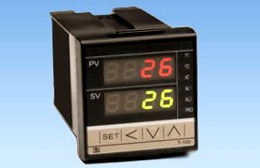
Doble display de 4 dígitos c/u. Formato: 48 x 48 x 80 mm (1/16 DIN). Función de autodiagnóstico.
Entrada y rango: Configurables (Pt 100, Pt 50, K, J, R, S, 6, E, T, W, PLII, U, L, -10+10 mV, O - 10 mV, O - 50 mV, 10 - 50 mV). Sistema de control: PID/Fuzzy con autotúning. ON/OFF con histeresis ajustable.
Relé de control: SPST 1 Alarma (Standard), salida relé SPST. Opcional: 2 Alarmas, salida reles SPST.
Alimentación: 85 - 265 V a.c.
Controlador a microprocesador T-400
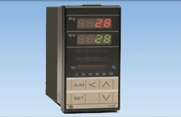
Doble display de 4 dígitos c/u. Formato: 48 x 96 x 80 mm (1/8 DIN).
Entrada y rango: Configurables (Pt 100, Pt 50, K, J, R, S, 6, E, T, W, PLII, U, L, -10+10 mV, O - 10 mV, O - 50 mV, 10 - 50 mV). Relé de control: SPDT. Alarma 1: Relé SPDT. Alarma 2: Relé SPST.
Sistema de control: PID/Fuzzy con autotúning. ON/OFF con histéresis ajustable.
Funcionamiento automático/Manual. Alimentación: 85 - 265 V a.c.
Variantes:
T-400 Servo: Salida de control: Rele de 3 posiciones para mando de servoválvula. Posicionamiento mediante tiempo de rotación de la válvula.
T-400 Program: 2 programas de 8 segmentos encadenables en 1 de 16 segmentos 3 alarmas (fin de programa, fin de segmento, etc...). Posibilidad de dar prioridad al tiempo o a la temperatura. Fin de programa o reinicio.
Controlador a microprocesador T-900
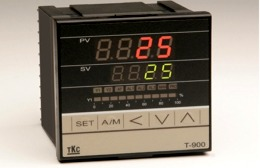
Doble display de 4 dígitos c/u. Formato: 96 x 96 x 80 mm (1/4 DIN).
Entrada y rango: Configurables (Pt 100, Pt 50, K, J, R, S, 6, E, T, W, PLII, U, L, -10+10 mV, O - 10 mV, O - 50 mV, 10 - 50 mV). Relé de control: SPDT. Alarma 1: Relé SPDT. Alarma 2: Relé SPST.
Sistema de control: PID/Fuzzy con autotúning. ON/OFF con histeresis ajustable.
Funcionamiento automático/Manual. Indicación del % de potencia entregada, mediante barra de LED.
Alimentación: 85 - 265 V a.c.
Controlador IC PLUS 902
Formato: 74 x 32 x 59 mm
Control electrónico de 1 set-point de temperatura, humedad, presión y otras magnitudes.
Diferentes modelos según tipo de entrada PTC/NTC, Termopar/PT100, V/I
Diversas tensiones de alimentación 12-24V ac/dc, 230V
Permite comunicación Modbus.
Controlador IC PLUS 915
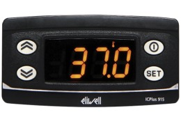
Marca Eliwell. Formato: 74 x 32 x 59 mm.
Control electrónico de 2 set-point de temperatura, humedad, presión y otras magnitudes.
Diferentes modelos según tipo de entrada PTC/NTC, Termopar/PT100, V/I.
Diversas tensiones de alimentación 12-24V ac/dc, 230V.
Permite comunicación Modbus.
Controlador carril DIN DR4020-4022
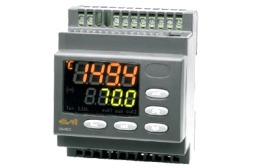
Marca Eliwell. Formato: 70x85x61mm.
Control industrial para guía DIN con dos salidas para regulación temperatura y procesos.
Diferentes modelos según tipo de entrada PTC/NTC, Termopar, PT100, V/I.
Diversas tensiones de alimentación 12-24V ac/dc, 230V.
Salida analógica según modelo.
Controlador EW72
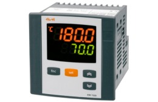
Marca Eliwell. Formato:72X72X80mm
Control industrial para guía DIN con varias salidas para regulación temperatura y procesos, según modelo.
Diferentes modelos según tipo de entrada PTC/NTC, Termopar, PT100, V/I.
Diversas tensiones de alimentación 12-24V ac/dc, 230V.
Salida analógica según modelo.
Controlador WAYTEK MPR48
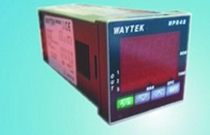
Controlador gama económica. Controlador 48x48 mm (1/16 Din) de un lazo de control. Se caracteriza por su elevada versatilidad y facilidad de configuración.
1 entrada configurable, seleccionable entre TC, K, J, S, R, PT100,PT500, PT1000, Ni100, PTC1K, NTC10K (B 3435K), 0/4..20 mA, 0..10V,0...40mV, Potenciómetro 1...6/160. Kohm, T.A (1024 puntos). Salida configurable como mando (SSR-Relè-V/I), alarma/evento, retransmisión analógica y/o serial.
Rango extendido de alimentación de 24 a 230 Volt Ac/Dc con aislamiento galvánico.
Controlador multilazo CMC-99
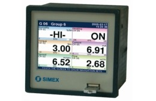
Formato 96x96mm, Display táctil LCD de 320X240Pixeles de 3,5".
Amplio espectro de interfaces de comunicaciones (USB, serie, Ethernet, GSM),
Hasta 48 entradas analógicas configurables.
Algoritmo de control P.I.D.
Entradas digitales. Salidas de alarma configurables.
Puertos para la conexión directa de teclado, ratón o Pen Drive de almacenamiento de datos, Protocolo RS-485 / ModBus RTU,
Memoria interna de 4GB, el equipo es totalmente ampliable mediante módulos externos.
Regulador digital RGL
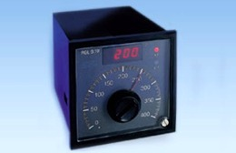
Formato: 96 x 96 x 127 mm (1/4 DIN). Alimentación Standard: 110/220 V a.c. 6 24/220V a.c. a determinar.
Entrada: Pt 100, J, K, 4/20 mA, 0/10V (3 dígitos) a determinar.
Preselección del punto de consigna: Analógica mediante botón con embrague. Indicación del valor medido: LED display. 3 dígitos de 8 mm, color rojo. Salida de control: Relé SPDT. Opcional: Lógica de 0/24 V, analógica 0/10 V o 4/20 mA.
Sistema de control: Todo/Nada o PD a determinar. Alarma opcional, salida por relé SPDT.
Regulador DIS401
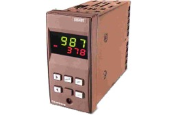
Indicador-regulador con 2 entradas universales: Termopar, RTD, 0/10V, 0-4/20mA..
Salidas de 2 relés+ SSR+analógica+RS485
Alimentación universal
Funciones: suma, diferencia, media
Formato: 48x96
Doble display
Controlador IDW961
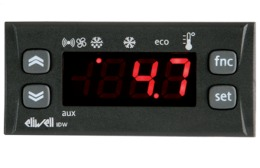
Controlador unidades refrigerantes IDW961. Incorporan hasta 3 relés y 2 sondas (según modelo). Sonda NTC incluida. Parámetro Frío/Calor. Descarche eléctrico o inversión ciclo. Tiempos de protección del compresor, así como de Paro / Marcha en caso de sonda rota. Fin descarche por temperatura con tiempo seguridad, ambos programables. Protección frontal: IP65.
Instalación: sobre panel, con agujero de montaje 71x29mm (+0,2/-0,1mm)
Temperatura de uso: -5...55°C
Controlador ID PLUS
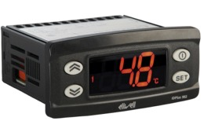
Controlador unidades estáticas ID PLUS Controles para unidades estáticas, ventiladas o de calor. Hasta 4 programaciones diferentes de parámetros preconfigurados. Parámetro Frío/Calor. Tipo de sonda admitida: PTC, NTC Y PT1000.
Instalación: en panel, con agujero de montaje 71x29mm (+0,2/-0,1mm).
Temperatura de uso: -5...55°C. Se conecta a TelevisSystem y ModBus. Nueva Unicard USB/TTL para carga/descarga de parámetros.
Modulo adquisición datos Sielco D1
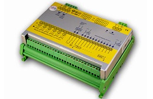
Módulos de entrada salida que permiten la lectura de señales digitales y analógicas, medida de frecuencia, totalizador de pulsos y control on/off de aparatos externos.
Todos los módulos están disponibles en carril DIN. La comunicación entre los módulos de entrada /salida y el sistema supervisor se basa en una comunicación serie RS-422/RS-485, con protocolo Modbus (ASCII o RTU).
El software WINLOG, nos proporciona el interface para el operario en un entorno Windows para la supervisión en tiempo real.
Indicador Gran formato DG-01
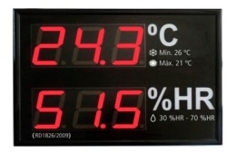
Display de Gran formato para indicación digital de hasta 3 variables a través de puerto RS-485 Modbus con o sin SONDA de Tª y HR.
Cumple con la normativa RITE. Ideal para indicación de variables en locales de gran
concurrencia de personas según REAL DECRETO 1826/2009 de 27 de Noviembre.
Indicadores universales ITP1
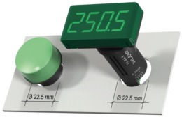
Indicadores digitales programables. Montaje en panel en orificio estandar de 22,5mm.
Pantalla programable (4 dígitos, 7segemnetos), posibilidad configuración punto decimal.
Entrada 4-20mA
Ver Ficha Técnica.
Controlador doble lazo RE92
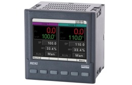
RE92 es un avanzado controlador de doble lazo para usos industriales. RE92 puede controlar dos lazos controlados de forma independiente o controlar dos variables en un único elemento.
Alimentación universal 85..253Vac/dc.
Señal de entrada universal. 6 salidas de relé
PID, encendido / apagado, control de tres estados de calefacción-refrigeración y control paso a paso.
Comunicación - RS485 (estándar), Ethernet (opcional) y registrador de datos. Pantalla gráfica de 3.5" a todo color con control de luminosidad.